git基本操作过程：
1、新建一个文件夹，打开，鼠标右击选择Git Bash Here，输入git init：初始化文件，是这个文件夹成为一个可用git操作的文件。

2、在文件夹中新建一个文件，在git中输入git status查看当前文件状态。

3、输入git add 文件名.文件格式将相应的文件添加到git缓存区。要添加一个或者多个文件时，也可用git add .添加。

4、在github网站中创建一个新项目。
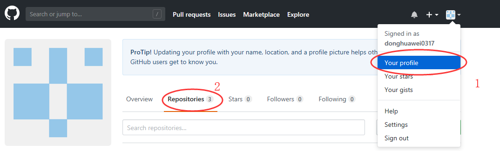
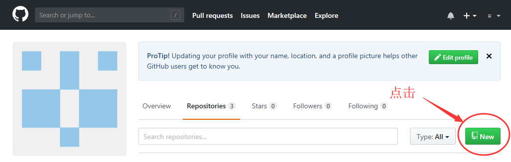
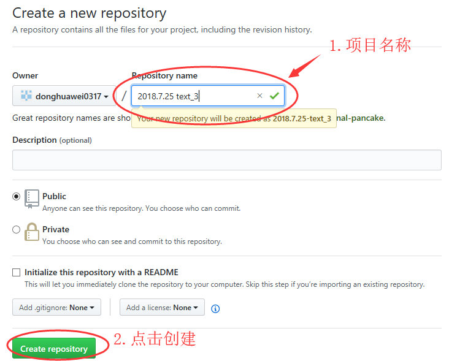
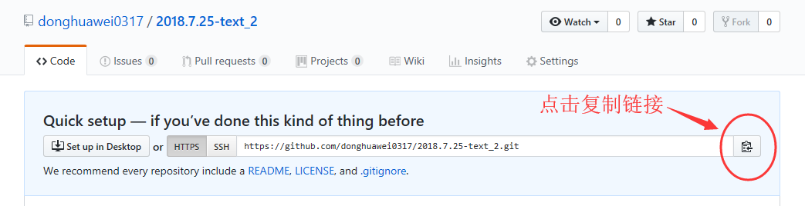
5、在git中创建本地库与远程网站的链接。

6、可以通过git remote -v查看本地与远程网站创建的链接。

7、通过git commit -m '备注'将相应的文件添加到历史区。

8、通过git push xxx master将文件从本地库上传到远程网站库中。

9、第一次上传时会出现如下提示：
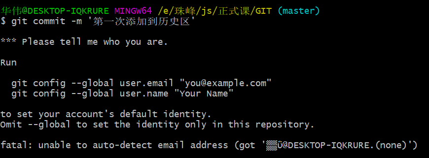
10、根据提示输入在github网站注册的用户名和邮箱即可。
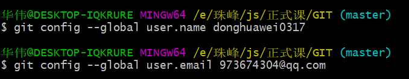
11、通过git config --list查看用户信息，确认git是否初始化成功
。
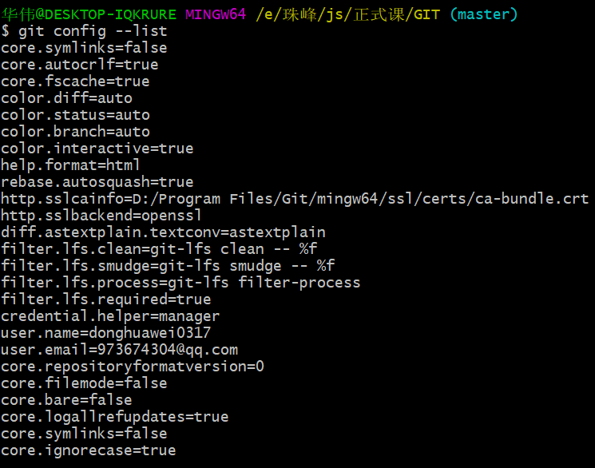
12、通过git status查看在本地修改的文件的状态。

13、修改后，重复上述步骤3、步骤7和步骤8。


14、在远程网站库中在线修改文件。
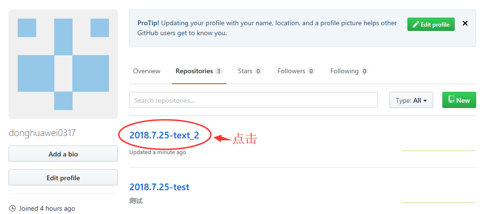
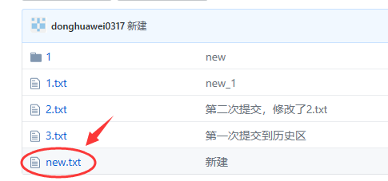
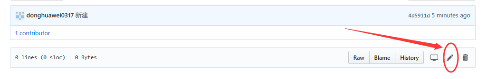
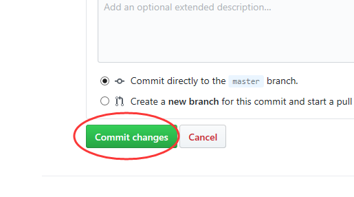
15、将本地修改的文件上传时，如果远程库中的文件已经被他人在线修改或上传了修改后的同一文件，会出现以下提示：

16、出现上述现象时，要先通过git pull xxx master将线上对应的文件拽下来。

其中CONFLICT (content): Merge conflict in new.txt是提示与本地文件有冲突。
17、步骤13后，打开相应的文件查看。
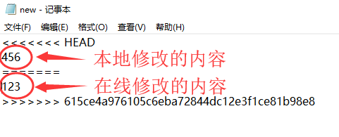
将要保留的内容之外的全部伤处即可，在实际工作中，如果也有别人修改了此文件，要与此人商讨修改内容的删减。
18、解决冲突后，再上传文件。

19、用git remote rm xxx删除本地库。


20、在上传文件时可能会出现如下情况，只要输入用户名和对应的密码即可。
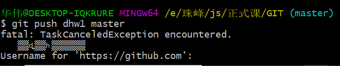
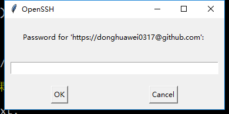
21、通过git --version查看git版本。